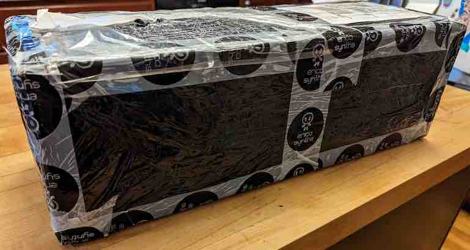
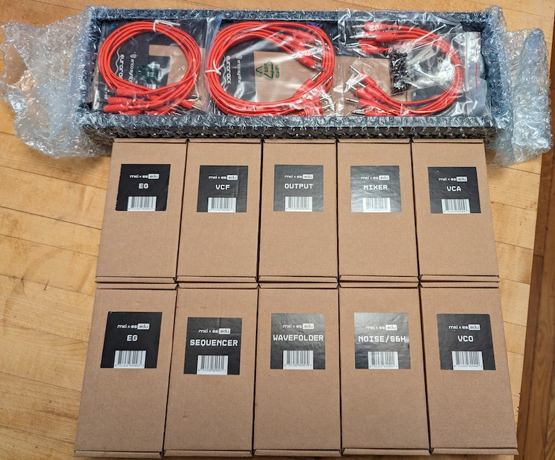

Building a Synthesizer, Introduction
The World of DIY Synthesizers
- Introduction: The World of DIY Synthesizers
- 1: The mki x es.EDU DIY System
- 2: Building the Power Supply
- 3: Breadboarding the VCO
- 4: A Gentle Introduction to Op Amps
- 5: Building the VCO
- 6: The Logic Circuits Model of Computation
- 7: Building the Mixer
- 8: Building the Envelope Generator
- 9: A Field Guide A Field Guide to Oscillators
- Glossary and Electrical Connections
I’m building a synthesizer. I like synths and I like electrical engineering, so it seemed like a natural fit. But I’m not at the point where I’m ready to take on the design from scratch, so I wanted to find a kit. There are a lot of choices! In this post I’ll review some of the options and explain how I settled on a kit to buy.
A synthesizer is a function which computes an audio signal over time, given some (usually keyboard) input. Sometimes, as with a modern digital synthesizer which contains a general-purpose CPU, it does this using the standard model of computation which we programmers are all very familiar with. But in an analog synthesizer, it does this computation using an analog computer, which is a different model of computation that is not so common today. So over the course of this series I will also look into alternate computational models and think about what we can learn about computation from them.
I’m also going to be writing what amounts to a laboratory notebook as I work. The point of building this kit for me is to learn about electrical engineering in general and the construction of analog synthesizers in particular, not to get soldering practice. This may be more detail than many readers want! But I do think that for people who are building these kits it can be really helpful to hear what others discovered while building them, so I have a lot of detail and digressions in the series.
Modular Synthesis
From a DIY synth-builder’s point of view, a modular synth (see the glossary for a definition of “modular” in this context) makes sense because they keep the various parts of the circuitry well-segregated; instead of a big mass of ICs which are used for multiple different features within a synth, each module stands alone, which means that you can understand how each part works more easily.
From a musician’s point of view, modular synthesis may or may not be your thing. It’s certainly not mine! Programming a sound on a modular synthesizer is roughly equivalent to programming on the ENIAC:
The initial design of the ENIAC did not use anything like the software we know today. It was basically an assembly of “functional units” that were wired together in a particular way for each new problem. If you wanted to do a multiplication after an addition, you would run a wire from the multiplier to the adder.
As a musician, I far prefer playing software instruments. I have the musical attention span of a squirrel on “Mach 6”, and I like to be able to change from song to song at a whim. But as an (amateur!) electrical engineer, I can learn a lot from building hardware, especially if the circuits are fairly easy to understand. So a modular synth is a good fit for this project.
Some Options for Synth Kits
There are, thankfully, a number of choices of synth kits on the market, and there is a lot of variety in terms of what you’re building, what techniques you’ll use to assemble it, and what you’ll learn in the process. Here are some kits that I considered.
- mki x es.EDU DIY Analog, modular, CV, the full kit includes 9 different modules + power supply rack. You can also buy the modules individually. The instructions are easy to read and fun, there are YouTube videos to go along with many of them, and most of the modules start with some breadboarding exercises so that you can really understand why the circuits are designed the way they are. The modules you will build are… OK. They will sound decent, but have very few features.
- PAiA FatMan Analog, MIDI/CV, fairly simple. Too simple for what I was after, but if you’re looking for a project you can do over a weekend it might be right for you?
- North Coast Synthesis has a number of DIY kits. They’ve put a lot of work into their instructions, with an emphasis on learning electronics, and the intent is to build modules that you’re going to want to keep and play, moreso than the two options above.
- Dreadbox has, occasionally, a kit or two in stock. These are kit versions of the commercial synths they sell, which are mostly desktop units which play nicely with Eurorack modular synths. The instructions are quite good, but don’t have the emphasis on learning electronics that you’ll find in mki x es.EDU DIY or North Coast manuals; they’re “solder this resistor here” sort of instructions.
- Winterboom makes open source DIY module kits.
- Black Corporation has some phenomenally complicated kits for polyphonic MIDI synthesizers, which feature minimal documentation and typically involve soldering hundreds of surface-mount components onto many boards. Minimal instructions, and you may have to make modificatsion to the circuits to work around issues, although there is some community documentation.
- There are many other options! I’ve tried to give a good range above, but if you’d like to see a much longer list, you could do worse than browsing the DIY section of synthCube. synthCube is a bit more than just another online retailer. Besides carrying a very large assortment of DIY parts and kits, they have purchased Ray Wilson’s hardware and business, which probably kept his site from going to spammers after his death and certainly resulted in his PC boards and kits remaining available.
It would be a mistake to buy one of these kits based solely on the features of the synth. As I noted above, I am more interested (for this project) in learning about electronics than ending up with a synth I want to play every day. So I spent some time reviewing the manuals, which are mostly available online, and seeing which had the most engaging documentation. There is a wide range between “barely documented” and “a mini-course in electrical engineering” represented here.
Moreover, there are many resources which could make a “make or break” difference in terms of whether or not you’re able to successfully complete the kit, especially if you take on one of the more challenging kits. These include message boards and YouTube channels. It’s worth spending a little time to review what resources will be available to you should you need a “lifeline.”
At any rate, I ended up choosing the mks x es.EDU for a couple of reasons. First, my desire to learn about how the underlying electronics worked really narrowed the choice down to “those kits with the best manuals,” and that meant either mks x es.EDU or North Coast. Second, the mks x es.EDU system is just that: A complete set of modules designed to work well together.
The North Coast modules, by contrast, are better in terms of the number of features they provide, but are much more expensive (the oscillator module alone lists at US $342, whereas an entire mks x es.EDU system goes for €630.00) and are not designed to be purchased as a “system” which you can assemble and play. They’re modules, which you might want to use with other DIY modules or with modules you buy from other vendors. They are probably a better fit for people who want to build the synthesizers for music that they play, rather than people are primarily interested in building a synth to learn about electronics and synthesis, although I think both groups would enjoy them.
Ordering from Latvia
Although there are US dealers for the Erica Synths gear, they seemed to be out of stock of the entire mks x es.EDU system when I looked, so I bought mine directly from Erica Synths in Latvia. To my surprise and delight, my credit card company did not immediately reject the order. Everything went through, and shipping was quite fast! In less than a week, the box was at my door, in good condition and ready for assembly.


What You’ll Need, Besides the Kits
Although the mks x es.EDU kits are “complete” insofar as they include printed cirucit boards, components, panels, and (optionally), an enclosure, you will need additional tools and materials to assemble them.
- A temperature controlled soldering station
- Solder, desoldering braid
- Some tools: Wire cutters, a good wire stripper, helping hands
- A multimeter
- An oscilliscope of some sort. Audio signals are pretty low frequency, however, and you’re only going to need a single channel for the most part, so feel free to go cheap in this deparment if you don’t already have one. Really, any barely functional scope is OK.
- A breadboard. This is really important. If you’re not going to bother breadboarding the circuits first, then I would question if the mks x es.EDU kits are really right for you. The whole point of these kits is that you should breadboard first to understand what each components is doing, not just solder stuff to a pre-printed board.
- Some means of audio amplification – whatever you would normally plug a synth into is fine, although you might want to choose some cheap headphones or something which you won’t get too sad about if you inadvertently destroy it with a strong signal.
Also, there will be additional parts and materials necessary for some of the individual kits; I’ll discuss those in later posts.
In the glossary I will explain some of the specific terminology and technology common in the modular synthesis world. If you already know about all of that, you might want to skip ahead to The mki x es.EDU DIY System
Resources
Each post in this series will include a “Resources” section with some useful links to places to learn more about the material discussed within the post.
- Make: Analog Synthesizers A book by Ray Wilson, from O’Reilly’s now-shuttered Make: division. Worthwhile and still in print. Roughly half this book is a general introduction to electronics with a particular focus on analog synthesis, and the other half is instructions for and explanation of one particular DIY synth, the “Noise Toaster” synthesizer. At about 160 pages, this is a considerably more approachable read than…
- Musical Applications of Microprocessors, by Hal Wilson. Now out of print, and used copies are rather expensive. A great book, though, and worth keeping an eye out for. 800+ pages, covers analog and digital synths (ca. 1985), and despite the title, is as much about discrete components as microprocessors.
- MSK 013 Middle Path Voltage-Controlled Oscillator The instructions for a VCO by North Coast Synthesis, which is an example of a “differently excellent” bit of manual writing.
Videos
- Introducing the mki x es.edu DIY VCO kit by Moritz Klein (7:23)
- Complete beginner’s guide to using a breadboard by Moritz Klein (21:22). The first half is an intro to using a breadboard, which isn’t very complicated, but they tend to come without instructions, so it’s still useful. The second half begins to introduce audio circuits, and might be helpful even if you already know how to use a breadboard.
- My collaboration with Erica Synths | Sunday Livestream by Moritz Klein (1:36:49) Useful, but the length is a bit of a trial and most of the technical material is covered elsewhere. Watch this one if you want to hear the “behind the scenes story” of bringing the kits to market.
- ECE4450 Analog Circuits for Music Synthesis by Aaron Lanterman (32 video playlist). These are lectures for an undergrad course at Georgia Tech which presumes some exposure to analog circuits and analysis. If you’ve had first year EE then you should be good. This is a long series of videos, and it references still other videos. I really, really like these videos; there’s nothing else out there that I’ve seen which compares in both the sophistication of the material taught as well as the specific focus on vintage synthesis. However, the length alone is kind of imposing, so these videos are more of a “if you just can’t get enough” option.